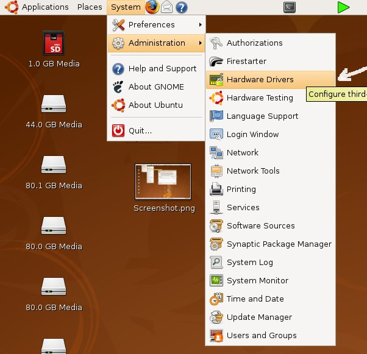
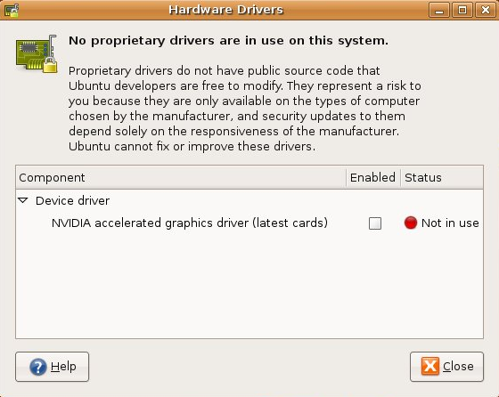
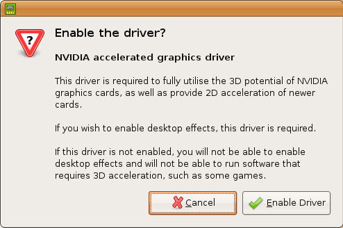
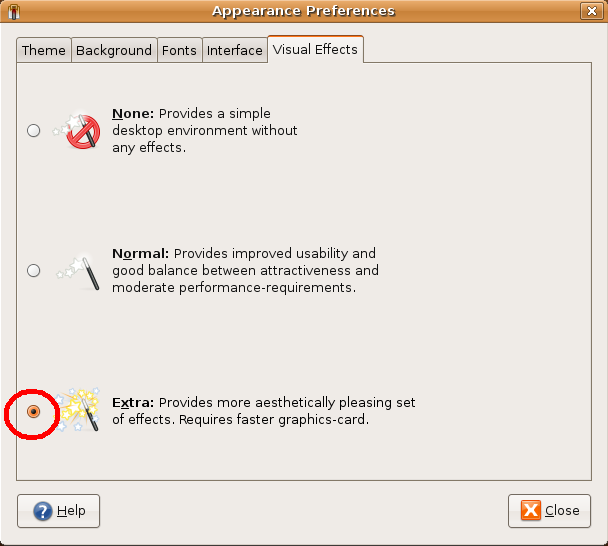
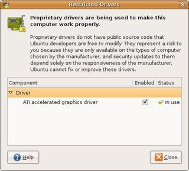

Since OpenHRP is a 3D-graphics based application, it is highly important to have
"3d-Acceleration"
feature supported graphics-driver installed on your system. Depending on the graphics-chip
you have, the installation procedure of the graphics-driver is different as described below.
Note:
-
Fundamentally, OpenHRP works even if not 3D-acceleration enabled. But it may cause to
slower the graphics and not to perform smoothly. However, this behavior is highly
depends on the performance of the hardware equipements on your pc such as CPU, RAM
and the brand of the graphics chip you are using. On some systems, it may work smoothly
without giving any problems, while even the basic operations of OpenHRP might not
perform on some systems.
-
Please be aware that, old graphics chips may not support 3D-acceleration feature.
Intel onboard chipsets
Basically it is not necessary to install drivers for Intel chipsets, because the driver
comes as manufacture provided by default. When comaparing with other brands, general
functionality of Intel chipset is suppressed to the minimum. But the 3D acceleration
feature must already be enabled at the first start of pc.
Installing drivers for NVIDIA chipsets
3D-acceleration feature is not supported by the open-source driver called "nv", that comes
deafult with Ubuntu. Therefor you have to install the restricted driver called "nVidia".
Following describes the installation procedure:
-
Browse to "System" > "Administration" > "Hardware Drivers" (On Ubuntu7.10 and previous
versions this comes as "Restricted driver Manager"). If you are asked for
password, enter the login password.

-
Within the "Hardware Drivers" dialog box, enable "NVIDIA accelerated
graphics driver" by clicking the checkbox along with.

-
When you are asked for confirmation, click on "Enable driver".

- You will be asked for restart and just do it.
Now we are going to change visual effects settings.
-
Browse to "System" > "Preferences" > "Appearance" menu option. select "Visual Effects"
tab, in the "Appearance Preferance" dialog box.
-
Select the radio-button along with "Extra:". After few seconds you will be asked for
confirmation. Click on "Keep settings" to confirm the change.

Installation completed. You can experience the difference with visual effects by opening,
closing and moving windows on the desktop.
Installing drivers fro ATI chipsets
Normally it is difficult to install proper drivers for ATI chipsets. Perhaps it may
work fine with default driver settings, in some systems. But actually, you have to
install following drivers called "fglrx" and "XGL", to enable 3D-acceleration.
Installing fglrx driver
On Ubuntu systems, installtion procedure is same as with NVIDIA chipsets. But the driver
installing with this procedure is called "fglrx"(Restricted driver for ATI chipsets), which
is supported only with comparatively latest ATI chipsets. Supported graphics chips are
shown in table below.
| fgrlx supported chips |
|---|
| Chipset |
Model |
| Mobility Radeon |
X1800, X1600, X1400, X1300,
X800, X700, X600, X300,
9800, 9600, 9550, 9500 |
Radeon Xpress |
200M series, 200 series,
1250 IGP |
Radeon |
X1900, X1800, X1600, X1300,
X850, X800, X700, X600,
X550, X300, 9800, 9700,
9600, 9550, 9500 |
Here goes the installation procedure.
-
First, update to the latest kernal and reboot.
-
Open "Hardware Drivers" dialog box by "System" > "Administration" > "Hardware Drivers"
menu option. The restricted driver will be detected automatically and displayed as
"ATI accelerated graphics driver"
-
Click on checkbox to enable the driver. Drivers' download and installation will be
start automatically.
-
When the driver installation completed, you will be asked for confirmation, and click
on "Enable Driver".
-
Fglrx driver will be enabled after rebooting.

Status after installation completed and restarted
XGL installation
Fglrx itself does not support 3d-graphics. To start 3D-graphics on your applications,
you have to install a program called "XGL". XGL can be easily installed on ubuntu, by
running following command in command-line. Then relogin ubuntu and XGL will be enabled.
$ sudo apt-get install xserver-xgl
=> For more about XGL installation, visit
here
[Installing CompizFusion] > Step 1-3

{kind=link}
{kind=link}
{kind=link}
{kind=link}